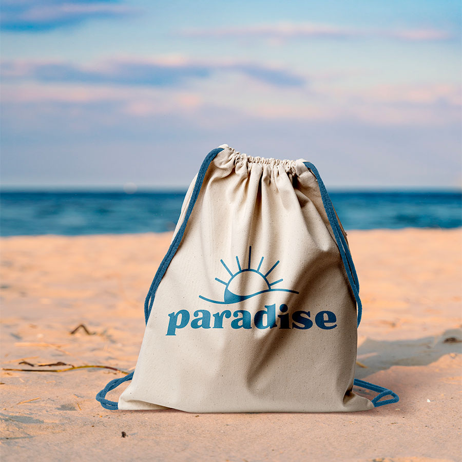

Freelance Grafisk Designer
Amalie Kragh Thomas
Velkommen til Amalie Design. Jeg er en grafisk designer, der er klar til at bringe dine ideer til livs og form af logo og visuel identitet, hjemmesider og print.
Hvad jeg tilbyder:
- Skræddersyet Grafisk Design
- Professionel og moderne visuel Identitet
- Brugervenlige og fængende hjemmesider
- Kreativitet, der Captivere
- Samarbejde om Unikke Brandingløsninger
Lad os sammen skabe et visuelt udtryk, der ikke blot imponerer, men også fortæller din virksomheds unikke historie både gennem logo, farver, foto, sociale medier og skrifttyper, men også hjemmesider og printmateriale. Uanset om du er en nystartet virksomhed eller ønsker at forfriske dit brand, er jeg her for at gøre din visuelle vision til en realitet.
"Tag det første skridt mod en unik online og offline tilstedeværelse" - Kontakt mig nu, og lad os omsætte dine idéer til virkelighed!"
Drømmer du om en professionel visuel identitet til din virksomhed?
Kan du nikke genkendende til følgende udfordringer?
- Din nuværende visuelle identitet fanger ikke din ønskede målgruppes opmærksomhed.
- Du føler at din virksomhed bliver overset i mængden uden et stærkt visuelt udtryk.
- Din nuværende visuelle identitet kommunikere ikke din virksomheds kerneværdier.
- Din virksomhed har ikke tid og ressourcer til at skabe en gennemført visuel identitet alene.
Lad mig hjælpe dig eller din virksomhed med at skabe en unik visuel identitet som tiltrækker din målgruppe og samtidig differentiere dig fra dine konkurrenter. Lad mig levere et professionelt og moderne design skræddersyet til din virksomhed, mens du får tiden til at fokusere på det som din virksomhed er virkelig god til.
Projekter
Visuel identitet og menukort for caféen Sirups
Selvportræt lavet i Adobe Illustrator
Plakat for en interaktiv oplevelse på Langelandsfortet

Visuel identitet for surfer butikken Paradise
Indpaknings design børnetøjsbutikken Pippy's Place